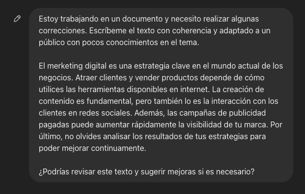

Básicamente, funciona como un "chat" donde podés escribir lo que quieras —preguntas, tareas, explicaciones, resúmenes, ideas, etc.— y la IA te contesta en base a todo lo que aprendió.
¿Cómo funciona?
- Fue entrenado con muchísimos textos (libros, páginas web, artículos, ejemplos de conversación, etc.) hasta 2023/2024, y además puede buscar información más actual en internet (según la versión que uses).
- No es que "sepa" como una persona, sino que predice cuál es la respuesta más lógica a lo que escribís, según patrones del lenguaje.
Cosas importantes:
- No siempre acierta al 100%: puede inventar datos o equivocarse.
- No tiene emociones ni pensamientos propios, pero puede simular una charla natural.
- Depende de la versión: algunas son más rápidas, otras más “inteligentes” o pueden usar imágenes y voz.
